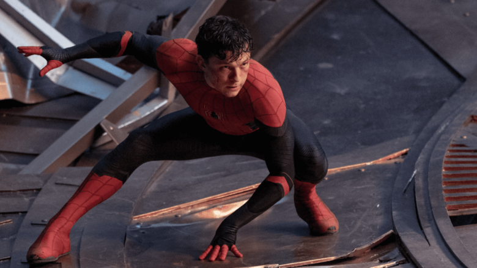

Published December 30, 2021
‘Spider-Man: No Way Home’: Tom Holland and Zendaya on the ‘Bittersweet' Ending
"It would have been so nice for them to go to college, and just swing off into the sunset."
BY RACHEL PAIGE

Spider-Man might have stopped the Multiverse from breaking any further and sent all the antagonistic ‘visitors’ back to their proper universe, but at what cost? The end of Spider-Man: No Way Home sees Peter Parker make one of the toughest, if not the toughest, decision of his life. Knowing that he’s the catalyst for the calamity unfolding around him and that there’s the only way he can put an end to it, Peter asks Doctor Strange to cast another spell — make everyone forget he’s Spider-Man, for real, this time.
While this sends the likes of Doc Ock, Green Goblin, Electro, Sandman, and Lizard back to where they came from, this also means that everyone in his universe is going to forget Peter Parker ever existed, too. Sadly, that includes his girlfriend MJ and his best friend Ned, not to mention allies like Doctor Strange and Happy Hogan. Everyone who even knew Peter’s secret before Mysterio forgets as well.
The plan works, and subsequently, Ned and MJ get into their dream school (MIT - Go Beavers!), but they no longer recognize the friendly neighborhood Spider-Man. The movie ends with Peter attempting to reconnect with them, and explain who he is, but seeing how happy they are without him and Spider-Man gives him pause. Maybe it’s better this way.
Two weeks before the release of No Way Home, Marvel.com talked to stars Tom Holland and Zendaya via video chat for a spoiler-filled discussion, including the film’s morose ending. Talking about the film as a whole for the first time, the two let their guard down and confess they’re sad about the ending, too.
“I actually hate we're in these interviews like, 'This movie's so fun!’” Zendaya explains. “I cried throughout the whole movie. And the first thing I said when we finished was, ‘This is awfully sad.’"
“It’s brutal,” Holland adds. “It's tough. It's bittersweet.”
“Is it though? Because it's very much just bitter,” Zendaya quips. “Like I'm not getting the sweet part.”
Elaborating further, Holland explains that Peter’s “starting a new chapter. And he's cleared his name. He's free of all that stuff. And the people that he loves—”
Before Zendaya cuts him off to remind him, technically, at the end of the movie, “He's lost everyone he loves.”
Holland then adds, “The people that he loves are safe, and they're alive.”
Zendaya reminds him that considering the world they live in is the Marvel Cinematic Universe, “They're never safe!”
“It’s very sad, the ending,” Holland retorts.
And considering the two of them are saddened by the film’s ending that they’ve known this entire time, what about the fans who — after months of excitedly waiting — are now going to be hit with this poignant conclusion?
“I’m sorry,” Zendaya is quick to add, before noting she wanted Peter and MJ “to go to college [together].”
“I wanted them to have a happy ending,” Holland adds. But, he knows that’s just not in the cards for these two. “We're still here, we're feeling good. We're proud of the movie. It would have been so nice for them to go to college, and just swing off into the sunset. Unfortunately, this is the way it is.”
Wrapping up the interview, it suddenly dawns on Zendaya, “There's going to be a lot of really upset little kids that are going to be like, [mimics wailing].”
Still looking on the positive side, Holland adds, “We may be teaching young kids a lesson they might not be ready for. But, [at least the movie’s] entertaining.”
Spider-Man: No Way Home is now playing in theaters. Get tickets now!